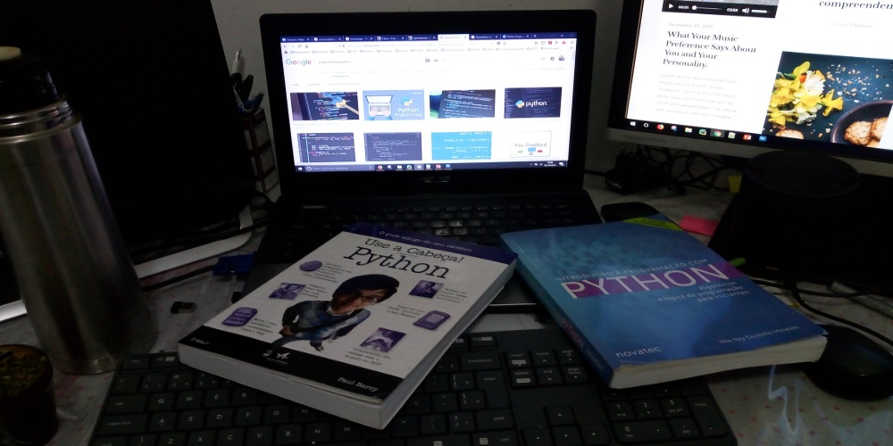

Meu Aprendizado da Linguagem Python

Inicio de Tudo
Meu primeiro contato com programação foi na Força Aérea no ano 98 no setor de microeletronica
tinha uns malucos que começaram a brincar com PIC, eu ja estava fazendo meu segundo curso de
eletrônica e me encantava, não tinha nem noção do que era Assembler mas gostei da ideia.
Tentei estudar mas não tive muito êxito, era muito difícil, fazer piscar um led era uma tortura.
Depois de vários anos estava estudando CLP no Senai, fiz o básico e avançado e fiquei interessado
em fazer Microcontroladores, ja fui para o 8051 também assembler, posso dizer que entendi um pouco
mais, mas ainda parecia um bicho de sete cabeças.
Uns anos mais tarde fiz um curso em São Paulo de PIC na MicroGenius, programação em C, foi bom, entendi
ja dava para fazer algumas coisas mais interessantes porem fiquei frustrado porque não consegui enxergar
nenhum mercado(Ano 2007).
Passado mais anos retomei a brincadeiras com microcontroladores utilizando agora o arduino e fique muito
mais motivado pela facilidade de recursos o compartilhamento de informações, a internet facilitando muito
o aprendizado e consegui fazer algumas coisas interessantes e ja sentindo que a programação em C, não era
um bicho de sete cabeças.
No meu processo de aprendizado além dos vídeos, me ajudo demais o curso em C de curso em C de CC50,
logo fui para fazer o curso de Harvard mesmo de CS50 na EDX, que tem explica muito conceito básico, e trabalha
no começo do curso com c, segue meu trabalho no scratch,
Nada de criticas, eu estou muito orgulhoso do resultado do programinha.
Como ja estava dominando alguns projetos em arduino, fui atrais para montar um servidor web e poder me comunicar
com o microcontrolador, ai percebi o quanto eu não conhecia nada de programação Desktop e serviços Web. Se bem
conhecia um pouco html para montar um blog ou algo assim não era suficiente para fazer um servidor. OK... é agora
que vou estudar, como monto um servidor web, que linguagem utilizar.
Comecei a pesquisar e pensei em fazer PHP ou Java, que era o mais popular em 2016, mas o professor Guanabara que é
um cara que explica a historia é o porque das coisas, me mandou fazer algoritmos, fiz o curso de algoritmos, para
não pular etapas, foi bem interessante, depois fiz HTML 5 e CCS montando um site. Ao final destes cursos, não
me proporcionaram o conhecimento suficiente para fazer meu servidor.
Desisti de estudar PHP porque percebi que é uma linguagem com pouca evolução, nao senti muita firmeza no histórico dela
e menos ainda no seu futuro, posso estar errado, foi minha percepção. Java era uma optima opção e continua sendo, mais
ainda pelo historico na utilização de embarcados, porem tudo o mundo fala que para iniciantes é uma linguagem complicada
de aprender. Aqui que chegamos ao Python, primeiro que o curso em vídeo se falava sobre a crescente corrente de pedidos
de um curso de python, depois tudo o mundo que falava de python como uma linguagem boa e com uma comunidade interessante
e não tão cheia de pessoas complexo de Deuses.
O que mais me chamou a atenção e foi o ponto de partida para me decidir por python foi que voltando a ver o curso de CS50
de Harvard todo aquilo que eles faziam em PHP agora era utilizado python. Para mim isso é fundamental porque se a universidade
que é referencia no planeta estuda python, quem vai negar que isso não vai pegar no futuro.
Comecei meu estudo pelo curso do Guanabara (Curso em video), o curso ainda estava em desenvolvimento e eu quero montar
meu servidor rapido, então procurei por python web e apareceu django, quando vi o Administrador mais um banco sql, falei
e isso que preciso, mas nao todo o que brilha é ouro. Este foi meu primeiro curso Este foi meu primeiro curso
esta em espanhol, mas foi dificil entender o caminho o que acontecia dentro do framework, precisava de mais informação.
Conheci as palestras de Henrique Bastos, achei muito legal a forma de explicar e comecei a seguir ele. Decidi que era
essencial estudar de alguns livros e fazer exercícios para não ficar tão perdido quando escrevia ou repetia algum código
no vídeo. Então comprei "Introdução ao Python" e "Use a cabeça", particularmente como sou iniciante gostei mais do primeiro livro
ainda estou fazendo os exercícios e postando no Github.
Depois de 100 paginas de livro e exercícios comecei a ficar desmotivado porque mesmo que praticasse sentia que quando voltava atrais
esquecia muita coisa, que a curva de aprendizado nao estava estável, ela estava voltando para atrais. Nesses dias o Henrique Bastos
abriu uma turma do Welcome to the Django, fiz a inscrição e nesse curso não so aprendi python, conheci um monte de historia de vida,
empreendedorismo, ser gente, uma comunidade fantástica e django.
Fiz o curso em 5 meses ou seja repeti os passos do vídeo aprendi muito, mas ainda tem muito caminho para andar. Umas das coisas mais
importantes que estou fazendo neste momento é concluir este site mostrando um pouco do que eu faço e fiz, sem medo a errar, sem temor
dos erros de gramatica e de acentos. Simplesmente o objetivo é plasmar o que faço.
O site que estou fazendo já leva 3 semanas de trabalho, para deixar em condições, neste primeiro momento vai ser
utilizando github como servidor, um template modificado e bem documentado que consiga postar alguns de meus projetos ou similares.
Importante que estou utilizando o git para versionamento. Neste processo o CCS e Boostrap tem sido muito importantes.
Hoje 15/10/2018 acordei 6:00 horas e fui a estudar um pouco, coloquei como objetivo terminar o livro de introduçao ao python, decidi
fazer o capitulo 9 que trabalha com arquivos, organizei algumas coisas e consegui so fazer dois exemplos, anoite peguei o django-girls
que antes do wttd parecia um bicho de 7 cabeças mas agora esta fluindo melhor, da para entender mais, acredito que isto se chama progresso.rsrs
Hoje dia 17/10 cedo finalizei o capitulo 5 do livro introdução ao python, as 11hs continuei o django girls consegui finalizar ele, fiz o
deploy do projeto, tambem esta no github, aprendi a subir o projeto no pythonanywhere, gostei do site, boa experiencia, como ja trabalhei
com heroku no WTTD, me arrisco a dizer que o pythonanywhere é mais amigável. Bom ja é 21 hs, chega por hoje. Vou descansar um pouco.
Continuara...